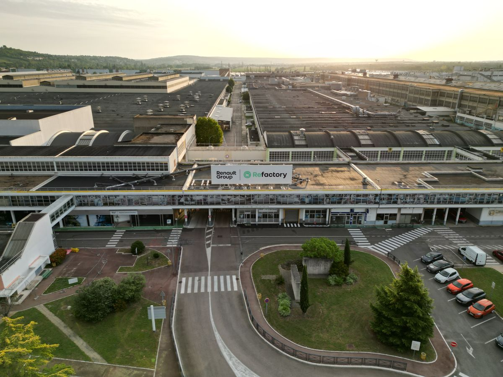
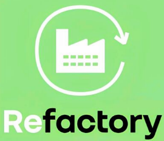

Groupe Renault – Refactory de Flins
J'effectue mon alternance à la Refactory de Flins-sur-Seine, au service IES (Industry Excellence System). Ce service aide les équipes de l'usine à simplifier et optimiser leur travail, et se tourne de plus en plus vers le digital.
Mes missions :
- développer des applications métier pour les équipes de l'usine (dojos de formation, suivi de production) ;
- piloter le parc applicatif du service : hébergement, maintenance, standards de développement ;
- animer un point hebdomadaire avec les autres apprentis développeurs (bonnes pratiques, entraide).
